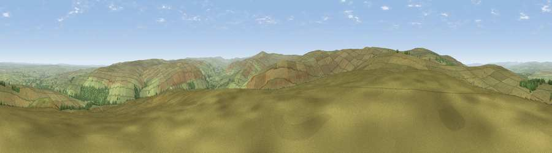

Viewpoint near Halton Lea Gate
#6068 in England · top 15% of its area beats it · near Halton Lea GateWhere it is
The exact computed spot (NY 65325 55175). Click the marker for map links.
The view, rendered

A 360° render of this exact spot computed from the terrain model, tree cover and land cover — summer colours, afternoon light, calibrated against photographs of famous viewpoints. Real trees, hedges and buildings will differ in detail.
The panorama
Grey silhouette: terrain skyline in each direction (720 bearings, Earth curvature and refraction included). Dashed green: skyline with trees (+15 m) and buildings (+8 m) as obstacles. Blue strip: how far the ground is visible on each bearing.
Where the view opens
Wedge length = distance to the farthest visible ground on that bearing (vegetation-aware). Rings at 10, 25 and 50 km.
What fills the view
94% grassland · 6% woodland
Angular shares of the visible panorama (visual magnitude), not map area. Landscape diversity 0.11 (0–1 Shannon).
Key numbers
More beautiful places nearby
The staircase of upgrades: each row has a higher view potential than everything closer. Driving times are estimates from straight-line distance, calibrated against real road routing — check an actual route before setting out.
| Place | Direction | Drive | Score |
|---|---|---|---|
| Viewpoint near Halton Lea Gate | NW · 3 km | ~7 min | 72.0 |
| Viewpoint near Slaggyford | WSW · 4 km | ~8 min | 73.7 |
| Cold Fell | W · 5 km | ~11 min | 74.0 |
| Viewpoint near Castle Carrock | W · 7 km | ~14 min | 76.9 |
| Viewpoint near Cumrew | SW · 9 km | ~18 min | 77.2 |
| Viewpoint near Cumrew | WSW · 10 km | ~19 min | 78.8 |
| Barrock Fell | WSW · 20 km | ~34 min | 81.1 |
| Viewpoint near Watermillock | SSW · 39 km | ~58 min | 82.6 |
54.89010, -2.54210 · source: screening · position refined by local search. Computed location — check access rights before visiting.